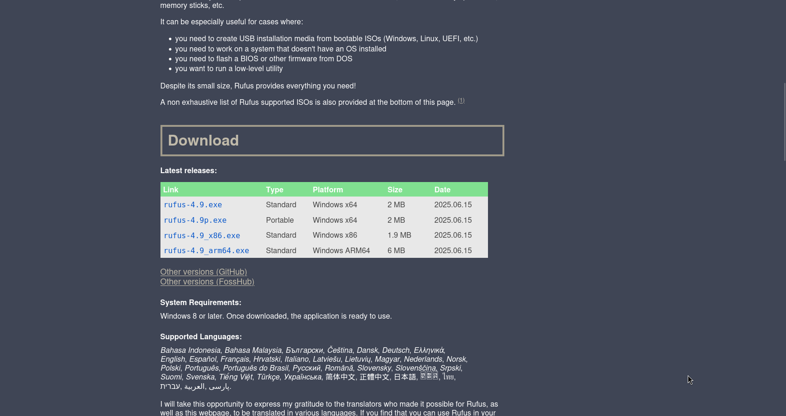
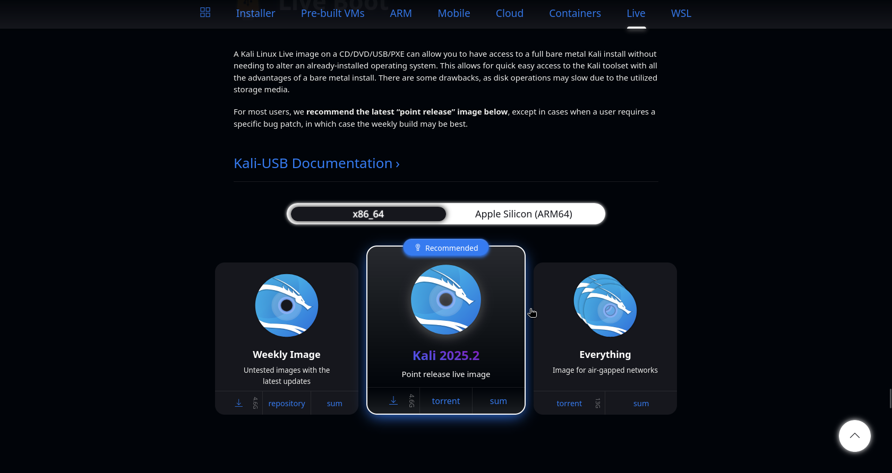
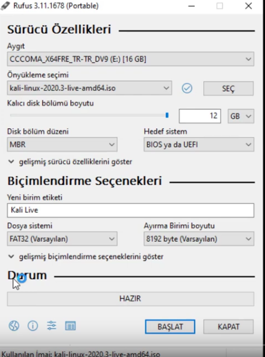
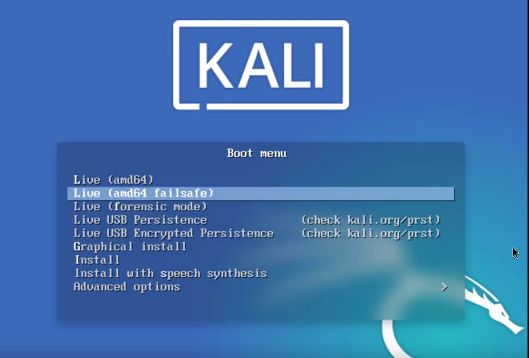
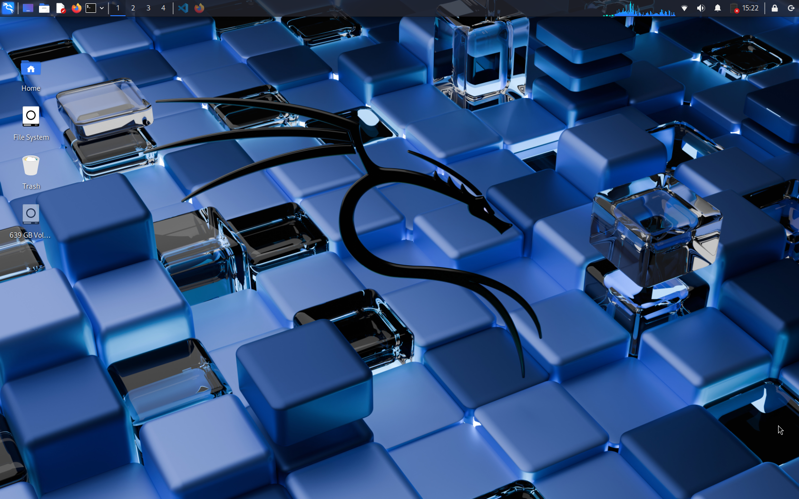

1 - USB hazırlama
İlk önce Rufus programını indirmemiz gerekiyor. Rufusu http://rufus.ie/en/ sitesinden indirebilirsiniz
Bu cepte kalsın şimdi yazdırma dosyasını indirmemiz gerek. Dosyayı Burdan indirebilirsiniz.
Şimdi Rufusu başlatalım. Ayarları gördüğünüz gibi ayarlayın, Aygıt kısmında usb'nizi seçin, önyükleme seçimi kısmında indirdiğimiz yazdırma dosyasını seçin, kalıcı dik boyutu kısmını sona dayayın ve BAŞLAT tuşuna tıklayın. Bu işlem biraz uzun sürebilir.
İşlem bitince pc nizi yeniden başlatın ve biosa girin bios tuşunun ne olduğunu bilmiyorsanız internetten pc nizin markasını aratabilirsiniz. Biosda önyükleme aygıtlarından USB nizi seçin. Karşınıza şunun gibi birşey gelmeli.
Burdan "Live" seçeneğini seçin ve işte! taşınabilir PC'niz hazır!!
